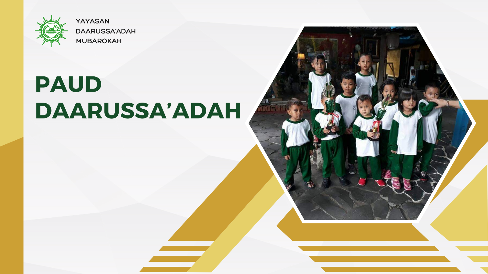
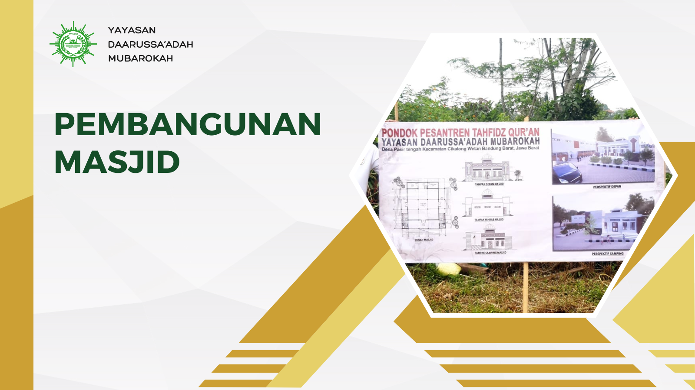
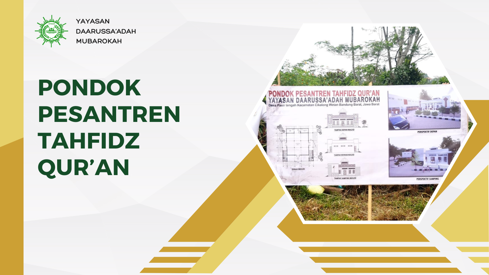

Melalui berbagai kegiatan pemberdayaan, Yayasan Daarussa'adah Mubarokah berupaya mewujudkan kebahagian kepada
seluruh masyarakat

Program Pendidikan Mengajar Paud
Kami menghadirkan pendidikan agama Islam yang mendalam, disesuaikan
dengan perkembangan anak usia dini. Melalui metode belajar yang
interaktif dan menyenangkan, anak-anak kami belajar menghafal
surah-surah pendek, memahami nilai-nilai Islam, dan mempraktikkan
adab-adab yang baik dalam kehidupan sehari-hari.

Pembangunan Mesjid Daarussa'adah Mubarokah
Pembangunan masjid ini merupakan salah satu langkah menuju
kemajuan Pondok Pesantren. Masjid ini akan menjadi tempat suci
yang menjadi pusat ibadah dan berbagai kegiatan positif untuk
para santri dan santriwati. Mari bersama-sama kita mewujudkan
masjid ini sebagai simbol keberkahan dan kedamaian di Pondok
Pesantren Tahfidz Qur'an.

Pembangunan Pesantren Daarussa'adah Mubarokah
Pondok Pesantren Tahfidz Qur'an didirikan sebagai sarana pendidikan
sekaligus memperdalam agama Islam untuk membuka pintu keemasan dan
melahirkan generasi-genarasi pecinta Al-Qur'an dengan
karakter yang mulia.